A monitor is a crucial output device for a computer, displaying video and graphics information. They come in various types, including CRT, LCD, OLED, and LED, each using different technology to create images. Monitors differ in size, resolution, aspect ratio, refresh rate, color depth, brightness, contrast, and response time.
They can be connected to computers via various cables or ports like VGA, DVI, HDMI, DisplayPort, USB, or Thunderbolt. Some monitors feature built-in speakers, cameras, microphones, or USB hubs. Touch-sensitive monitors can detect user input on the screen. Monitors can be used singly or in multiple configurations to extend or duplicate the display.
Keyboard
A keyboard is a primary input device used with a computer. It consists of a set of keys that correspond to letters, numbers, symbols, and function commands. When a key is pressed, it sends a signal to the computer to perform a specific operation. Keyboards come in various layouts, the most common being the QWERTY layout.
They can be connected to the computer via USB, wireless, or Bluetooth connections. Some keyboards have additional features like multimedia keys, backlighting, and programmable keys. Keyboards can also vary in size, with compact or ergonomic designs available. They are essential for tasks like typing, programming, gaming, and navigating software applications.
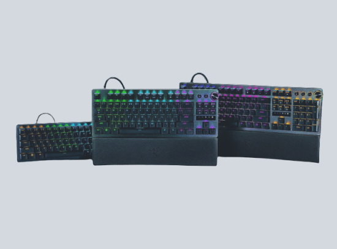
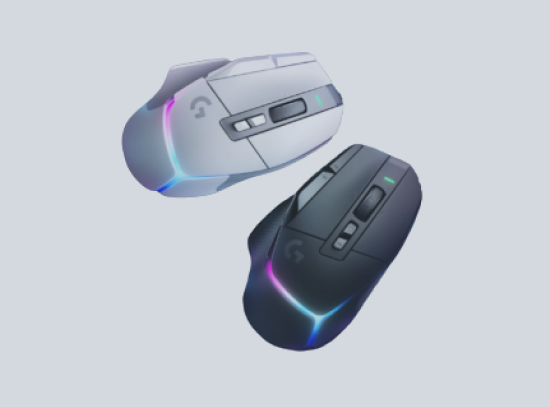
Mouse
A mouse is a key input device for a computer. It allows the user to navigate and interact with the computer’s graphical user interface by controlling a pointer or cursor. The mouse detects movement, which is translated into motion on the screen. It typically has buttons that can be clicked to select, drag, and drop items on the screen.
Some mice also have a scroll wheel for scrolling through documents or web pages. Mice can be wired or wireless, and they use various technologies to track movement, including optical and laser sensors. Ergonomic designs are available to reduce strain during prolonged use. In addition to standard use, specialized mice exist for gaming, graphic design, and other applications.
System Unit
The system unit, also known as the computer case or tower, is the core part of a computer. It houses the computer’s main hardware components, such as the motherboard, CPU, RAM, and storage devices like hard drives or SSDs. The system unit also contains expansion slots for additional hardware like graphics cards or sound cards and ports for peripherals like monitors, keyboards, and mice.
The system unit is powered by a power supply unit (PSU) that converts electricity from an outlet into usable power for the computer’s components. Cooling mechanisms, such as fans or liquid cooling systems, are also housed in the system unit to prevent overheating. Overall, the system unit is essential as it for protection.
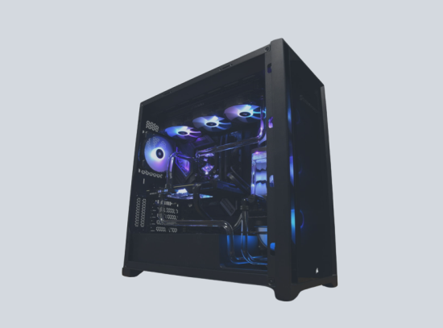
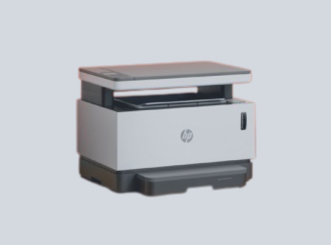
Printer
A printer is a peripheral device that converts digital data into physical media. It takes the information displayed on your computer screen and reproduces it on paper, transcribing text, numbers, and graphics. Printers come in various types, including inkjet, laser, and thermal, each using different technology to create images. They can be connected to computers via USB, wireless, or network connections.
Some printers have additional features like scanning, copying, and faxing, making them multifunction devices. Printers vary in print quality, speed, size, and cost. They are essential for tasks like printing documents, photos, labels, and more. In addition to home and office use, specialized printers exist for industrial applications like 3D printing.
Speaker
A speaker is an output device that allows a computer to produce audio. It converts electrical signals into sound waves, enabling the user to hear audio from the computer. Speakers can be built into the computer, as in laptops, or they can be external devices connected via cables or wirelessly. They come in various types and sizes, from small portable speakers to large stereo systems.
Some speakers are designed for specific purposes, such as gaming or music production. Speakers can be used for a variety of tasks, including listening to music, watching videos, gaming, and video conferencing. Overall, speakers enhance the multimedia experience of using a computer.
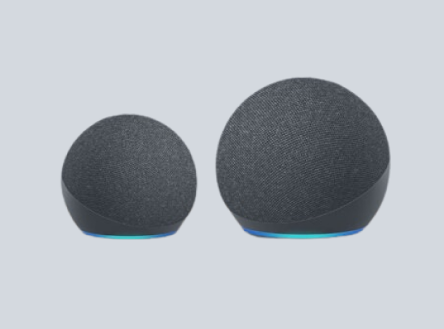
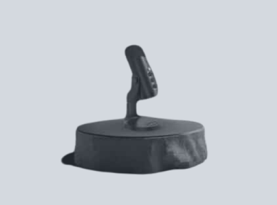
Microphone
A microphone is an input device that allows a computer to receive audio. It captures sound waves and converts them into electrical signals that the computer can process. Microphones can be built into the computer, like in laptops, or they can be external devices connected via cables or wirelessly.
They come in various types and sizes, from small clip-on microphones to large studio microphones. Some microphones are designed for specific purposes, such as podcasting, music recording, or gaming. The quality of a microphone is determined by factors like frequency response, sensitivity, and noise cancellation. Microphones can be used for a variety of tasks, including voice recording, video conferencing, and voice commands. Overall, microphones enhance the interactive experience of using a computer.
Motherboard
A motherboard, also known as a mainboard, is the primary circuit board inside a computer. It serves as the backbone of the system, connecting all other components such as the CPU, memory, and storage devices. The motherboard also houses the BIOS, which is responsible for booting up the computer and configuring hardware settings.
Additionally, it provides expansion slots for peripherals like graphics cards and sound cards. The design and layout of a motherboard can greatly influence system performance and stability. In essence, the motherboard is the heart of a computer, enabling all parts to communicate and work together.
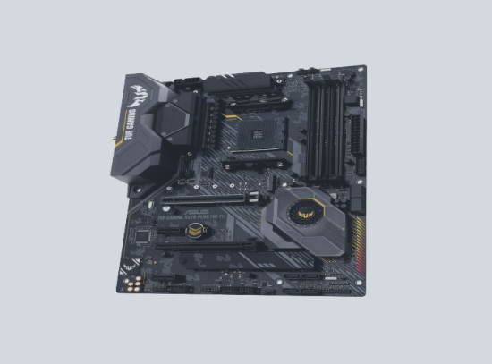
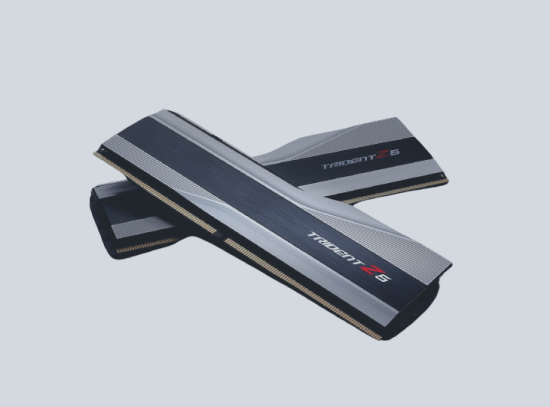
RAM
Random Access Memory (RAM) is a type of computer memory that is used to store data that the computer is currently working with. It is called “random access” because any storage location can be accessed directly. RAM is volatile, meaning it loses its contents when the computer is turned off or restarted.
The more RAM a computer has, the more data it can process at once without slowing down. RAM can be upgraded in many computers, allowing for increased performance. In essence, RAM serves as the “short-term memory” for the computer, holding data that is being actively used.
GPU
A Graphics Processing Unit (GPU) is a specialized electronic circuit designed to rapidly manipulate and alter memory to accelerate the creation of images in a frame buffer intended for output to a display device. GPUs are used in embedded systems, mobile phones, personal computers, workstations, and game consoles. A GPU is very efficient at manipulating computer graphics and image processing, and its highly parallel structure makes it more efficient than a general-purpose CPU for algorithms where the processing of large blocks of data is done in parallel.
In a personal computer, a GPU can be present on a video card or embedded on the motherboard. In certain CPUs, they are embedded on the CPU die. The term GPU was popularized by Nvidia in 1999, who marketed the GeForce 256 as “the world’s first GPU”.
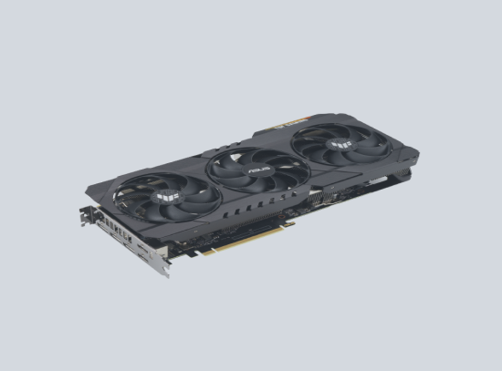
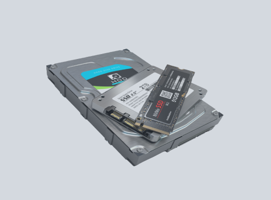
HDD / SSD
A Hard Disk Drive (HDD) and a Solid State Drive (SSD) are both data storage devices used in computers, but they work in different ways. An HDD stores data on a rotating disk and uses a read/write head on an arm to access data. It retains its data even when powered off.
On the other hand, an SSD has no moving parts and stores data on interconnected flash-memory chips. SSDs are typically faster, more durable, and more energy-efficient than HDDs, but they are also more expensive. Both HDDs and SSDs can be used for the bulk storage of operating systems, software, and personal files.
CPU
The Central Processing Unit (CPU) is the primary component of a computer that performs most of the processing inside the computer. It’s often referred to as the “brain” of the computer. CPUs interpret and carry out program instructions, manage data movement in the system, and perform arithmetic and logical operations.
Modern CPUs are multi-core microprocessors, meaning they contain more than one core with which to perform tasks. These cores can simultaneously execute multiple instructions. The speed of a CPU is typically measured in gigahertz (GHz), with a higher number indicating a faster processor.
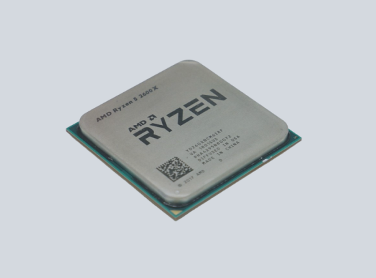
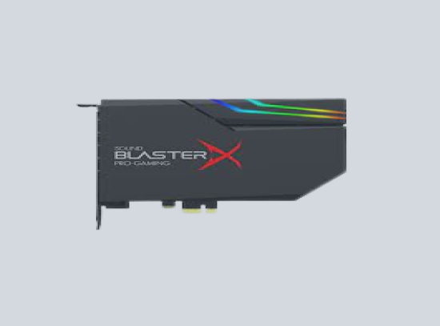
Sound Card
A sound card, also known as an audio card, is a component of a computer that processes audio signals. It provides audio inputs and outputs to and from a computer under the control of computer programs. The sound card converts digital data to analog sound waves you can hear in your speakers. It can also record audio in digital form from various inputs.
Most modern computers have sound cards built-in to the motherboard, but standalone sound cards for improved audio quality also exist. In essence, a sound card is responsible for what you hear in your headphones or speakers when using a computer.
Scanner
A scanner, in the context of computers, is an input device that scans documents such as photographs and pages of text. When a document is scanned, it is converted into a digital format. This digital file can be manipulated and stored on a computer.
Scanners come in various types, including flatbed scanners, sheet-fed scanners, and handheld scanners. They are often connected to a computer via a USB connection. In essence, a scanner digitizes physical documents so they can be viewed, edited, and stored on a computer.
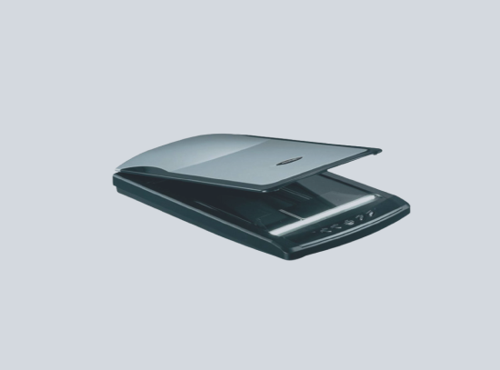
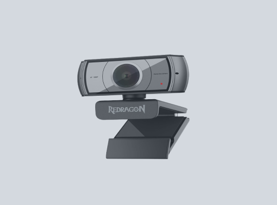
Webcam
A webcam is a digital video camera that’s connected to a computer and can send live video and audio over the internet. It’s often used for video conferencing, streaming, and other multimedia applications. Webcams can be built into a computer or monitor, or they can be standalone devices that connect via USB or wireless signals.
They capture video and images in real time, which can then be viewed or recorded by the computer. Some webcams also have built-in microphones for audio capture. In essence, a webcam allows for visual and audio communication between users over the internet.
×
PRIVACY POLICY
Personal Information
We do not collect any personal information unless you voluntarily provide it by sending us email, participating in a survey, or completing an online form.
Use of Information
We use the collected information to respond to user inquiries, provide services requested by the user, and improve our web content.
Cookies
Our website uses "cookies" to help personalize your online experience. You have the ability to accept or decline cookies.
Changes to this Policy
We reserve the right to change this policy at any time and will post any changes to this policy as soon as they go into effect.
Contact Information
For any questions regarding this policy, please contact me at sumalinogrex07@gmail.com
TERMS & CONDITIONS
Acceptance of Terms
By accessing this website, you are agreeing to be bound by these website Terms and Conditions of Use.
Use License
Permission is granted to temporarily download one copy of the materials on the website for personal, non-commercial transitory viewing only.
Limitations
In no event shall we be liable for any damages arising out of the use or inability to use the materials on our website.
Revisions and Errata
The materials appearing on our website could include technical, typographical, or photographic errors.
Links
We have not reviewed all of the sites linked to our website and are not responsible for the contents of any such linked site.
Site Terms of Use Modifications
We may revise these terms of use for our website at any time without notice.
Governing Law
Any claim relating to our website shall be governed by the laws of the Philippines without regard to its conflict of law provisions.